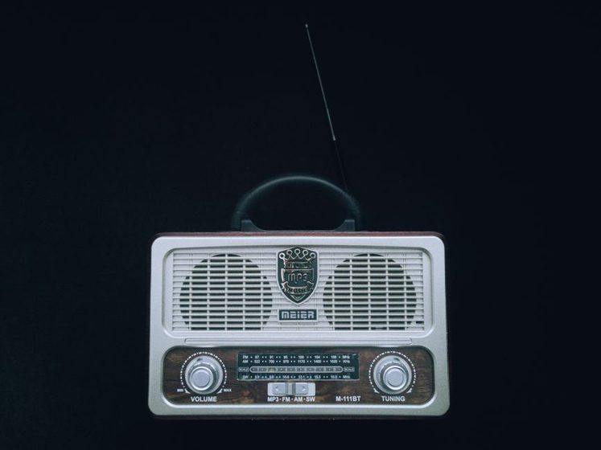

An Antenna in a Rented Yard
No permanent mounts, no holes in the fence, and still enough wire in the air to log three continents in a week.

The lease ran four pages and used the word "permanent" six times without ever defining it, which is either sloppy drafting or a landlord's way of leaving room to argue later. Either way, twelve metres of stranded wire went up on a Tuesday evening anchored to nothing more committal than a porch-railing clamp and a pair of paving stones, and by the following Sunday the logbook held three continents. No epoxy, no lag bolts, no hole drilled anywhere a deposit inspection would ever find. Just an antenna that could come down in under four minutes if a truck ever pulled into the driveway unannounced.
Reading the Lease Instead of Guessing at It
"No permanent structures without written consent" turned out to be the only sentence that mattered, and it took an actual phone call to the property manager to find out what it excluded. Removable meant removable: a mast that unclamps, a wire that comes down, nothing bolted through siding and nothing buried in the yard. Nothing in four pages said a word about a fiberglass pole leaning against a railing for a couple of hours after dinner. Asking first, in writing, cost one short email and saved a much worse conversation two months later, the kind that ends with a certified letter instead of a shrug.
Two Anchors That Aren't the House
The mast is a thirty-one-foot telescoping painter's pole, the kind sold for reaching a ceiling, held upright by a ratchet strap looped around the deck railing rather than any fastener that touches the actual structure. The far end carries the wire over a tall shepherd's-hook plant hanger, its base weighted by two paving stones instead of driven into the lawn — a ground stake counts as an alteration too, in a lease read this literally. Between the two runs twelve metres of stranded copper, fed as an end-fed halfwave through a small matching transformer that lives in a plastic storage tub by the back door. The feedline itself threads through a window left cracked an inch, rather than through any hole that would ever need patching.
Up Before Six, Down by Eight
The wire only stays airborne for the hours it's actually working. Most sessions start before sunrise, timed to catch the same low-angle stretch of propagation described in the grayline window, twice a day, and the whole rig comes down within twenty minutes of the band going quiet. That habit started as a way to avoid a neighbor's question about a wire visible from the street at odd hours; it turned into the single best filter for deciding whether a session was worth having at all. A wire that's only ever up when it's likely to hear something doesn't waste an evening, and it never becomes furniture the property manager gets used to seeing.
One Week, Recorded Honestly
Four real openings made the logbook that week, out of considerably more hours spent listening to plain static. The point of writing them down wasn't to inflate a temporary setup into something it wasn't, but to keep an honest count of what a clamped pole and a weighted hook could actually manage.
| Day | Band | Heard | Local Time | Notes |
|---|---|---|---|---|
| Mon | 20m | CT · Portugal | 7:10 AM | Strong, right at the grayline peak |
| Wed | 17m | LU · Argentina | 4:40 PM | Weak, faded inside ten minutes |
| Thu | 15m | ZS · South Africa | 3:55 PM | Brief, gone before the ink dried |
| Sat | 20m | ZP · Paraguay | 7:35 AM | Confirmed on the second pass |
Four logged openings from one week, on a wire that spends most of its life coiled in a hallway closet.
What a Rented Yard Doesn't Give You
None of this pretends to match a permanent tower sitting over a real buried radial field. The matching transformer lives exposed in a tub that isn't fully weatherproof, and the SWR reading drifts a noticeable amount after a hard rain, until the wire has had an hour or two to dry out. There's no ground rod, just a counterpoise draped along the fence line and coiled up with everything else by eight. These are real tradeoffs, not modesty, and pretending otherwise would only make the next rainy-night session more confusing than it needs to be.
A twelve-metre wire strung and struck inside an hour will out-log forty feet of aluminum that never goes up, because the paperwork said no and nobody argued with it.
What the setup gives up in performance, it makes up simply by existing on nights a permanent installation would still be waiting on committee approval to try.
The Non-Permanent Checklist
Five habits that kept a week's worth of listening inside the lease, not around it:
- Clamp, never bolt. Anything touching railing, decking, or fence post unclamps in under a minute.
- Weight it, don't stake it. Paving stones and a sandbag instead of anything driven into turf.
- Feed through a gap, not a hole. A cracked window or a door sweep, nothing a caulk gun ever has to fix.
- Down when it isn't listening. Nothing stays airborne outside an active session.
- Photograph the "before." A dated picture of the bare porch, kept in case anyone ever asks what usually lives there.
Proof That Travels Better Than the Excuse
A logbook entry made from a temporary antenna is exactly as real as one made from a hundred-foot tower — the ionosphere doesn't check a lease before it bends a signal home. What changes is how much has to be explained afterward. A temporary setup with a written log and a dated photo answers most questions before anyone thinks to ask them. A temporary setup with no record at all answers none of them, and it's the record, more than the antenna, that ends up doing the work.
A note on what this describes: this is one tenant's own antenna, built to satisfy one specific lease and one landlord's particular reading of the word "permanent." Rental agreements, HOA covenants, and local ordinances vary widely, and some prohibit exterior wire of any kind regardless of how it's mounted or how quickly it comes down. None of the above is legal advice — read your own agreement, and ask in writing before assuming a workaround like this one applies to your situation.